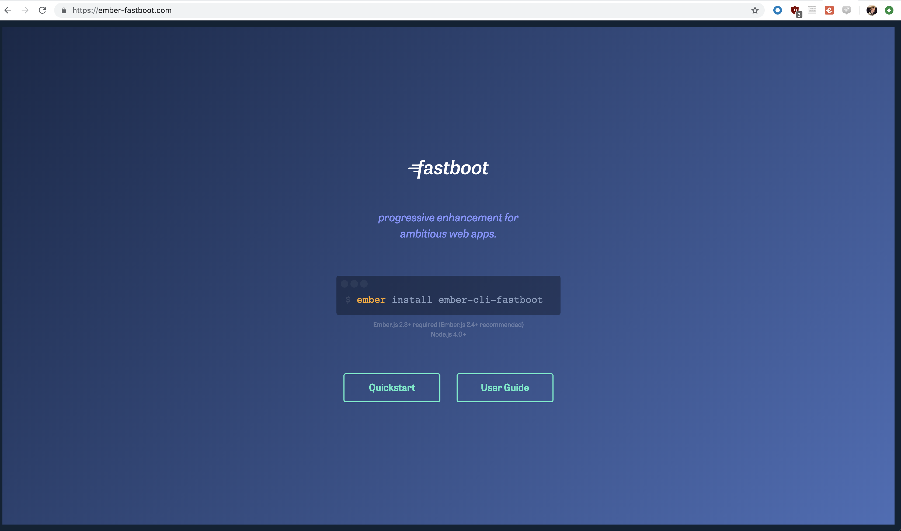
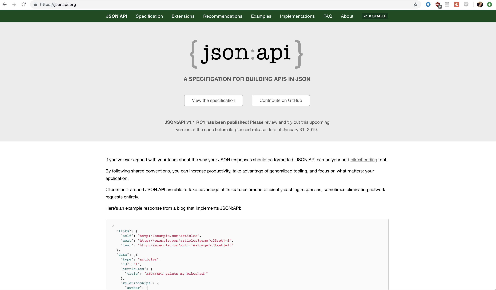
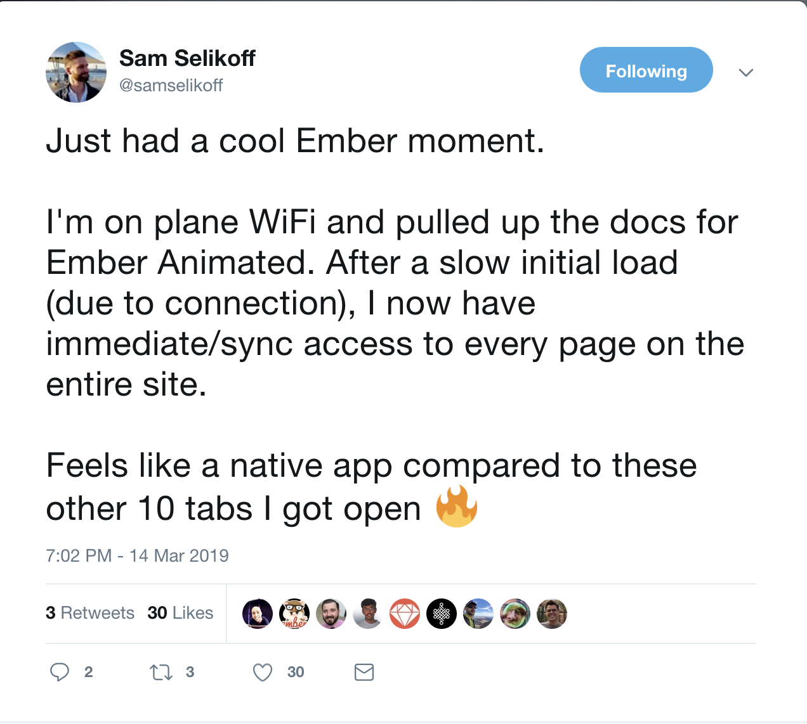
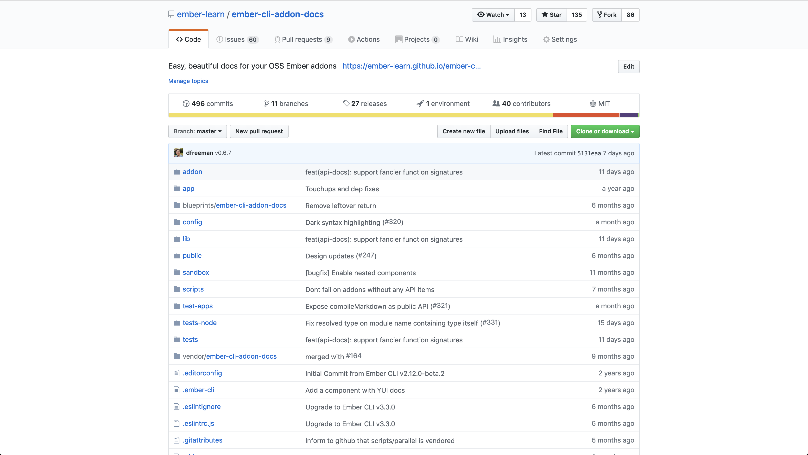
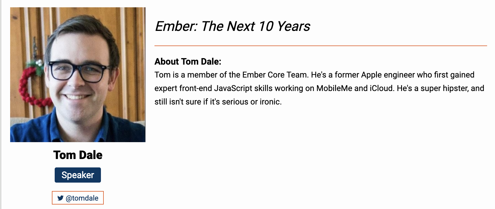
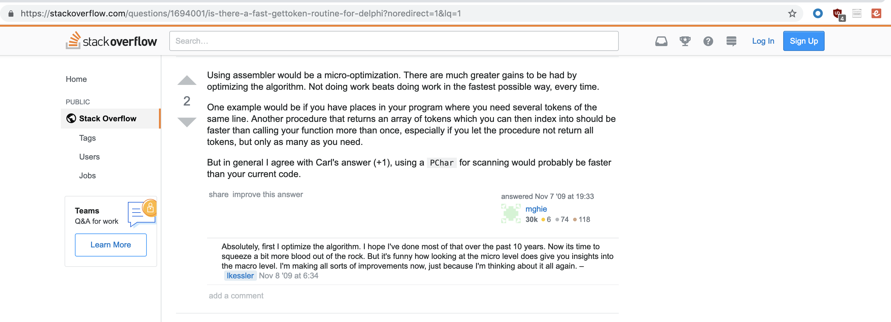
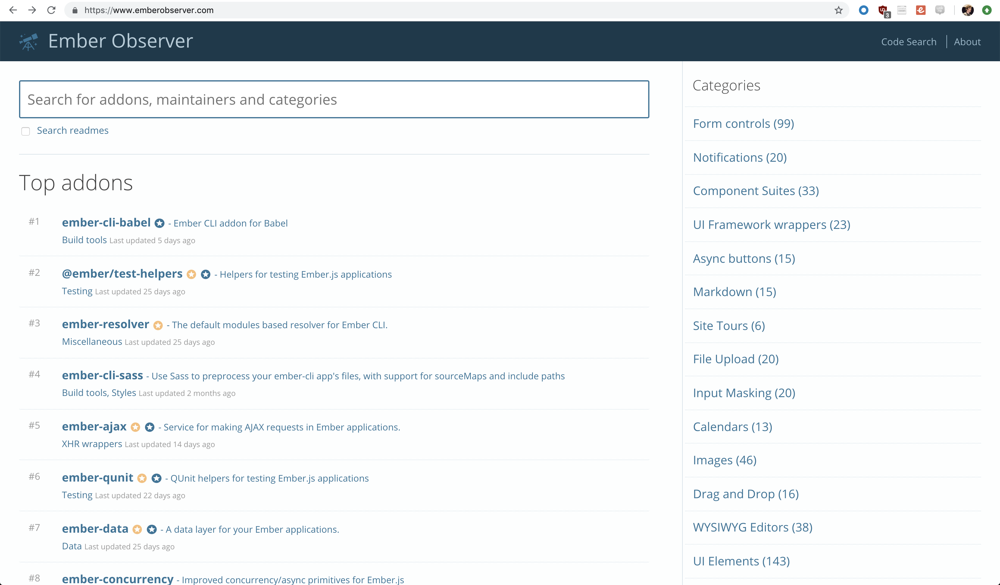
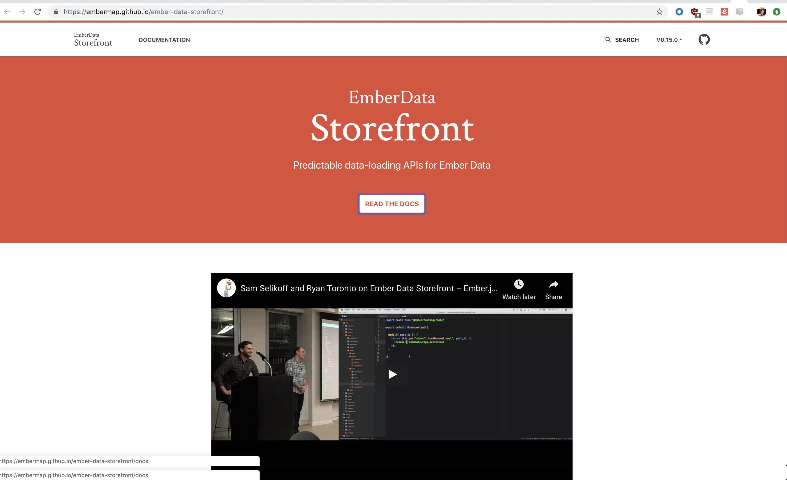

-

Isolated Serialization Layer

Consistency the happy path
Bets that paid off:
Isolation
Identity Map

Relationship handling

Isolated Model Layer with a schema
import DS from 'ember-data';
import { computed } from '@ember/object';
const { attr, hasMany } = DS;
export default DS.Model.extend({
file: attr(),
variables: attr(),
functions: attr(),
classes: hasMany('class', { async: false, }),
components: hasMany('class', { async: false, }),
/*
This gives us a way to link to a model, since we don't always link by the actual ID:
{{link-to 'item' model.routingId}}
Possible refactoring is to always link by actual ID, and implement redirects.
*/
routingId: computed('id', function() {
return `modules/${this.get('id')}`;
})
});
-
Diagram
2015
Octane
import DS from 'ember-data';
const { Model, attr } = DS;
export default class Person extends Model {
@attr('string') firstName;
@attr('date') birthday;
}
-
let record = run(() => {
return store.createRecord('user', { name: 'HeroicEric' })
});
-
let record = store.createRecord('user', { name: 'HeroicEric' });
-
2012 -> 2019
2019 -> 2025

- Simple data loading patterns
- Simple cache managament
- Hundreds of model classes
- Consistent, default payloads
- Advanced Data Handling Capabilites
- Performance at scale
- DX
Good core
How to expand


- Advanced Data Handling Capabilites
- Performance at scale
- DX
- Ember Data StoreFront
- Ember MegaMorphic Model
- Orbit.js

- Ember Megamorphic Model
- Orbit JS
- 2018
Dan Gebharts talk